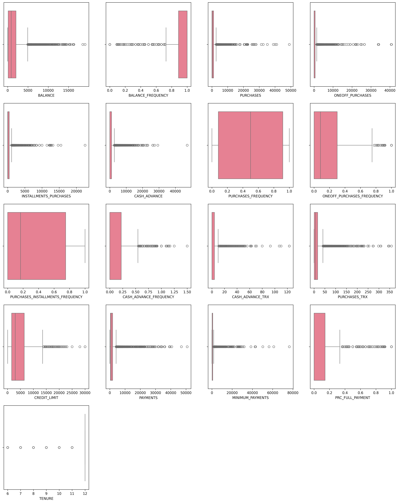

# Imports
import pandas as pd
import numpy as np
import matplotlib.pyplot as plt
import seaborn as sns
import math
from sklearn.model_selection import train_test_split, cross_val_score
from sklearn.preprocessing import StandardScaler, RobustScaler, MinMaxScaler
from sklearn.ensemble import RandomForestClassifier, GradientBoostingClassifier
from sklearn.linear_model import LogisticRegression
from sklearn.metrics import classification_report, confusion_matrix, roc_auc_score
from sklearn.pipeline import Pipeline
from sklearn.compose import ColumnTransformer
from scipy import stats
import warnings
warnings.filterwarnings('ignore')
# Set random seed for reproducibility
np.random.seed(42)Customer Churn Prediction for Credit Card Dataset
Objective: Predict which customers might stop using their credit cards or switch to a competitor.
This notebook implements: 1. Exploratory Data Analysis (EDA) 2. Data preprocessing and feature engineering
3. Synthetic target variable creation for churn prediction 4. Machine learning model training and evaluation 5. Feature importance analysis
Load Data and Initial EDA
# Load the credit card dataset
credit_card = pd.read_csv('data/CC GENERAL.csv')
def EDA_data(df):
print("Basic Information:\n")
print(df.info())
print("\nShape of the dataset:\n", df.shape)
print("\nData types:\n", df.dtypes)
print("\nSummary of the dataset:\n", df.describe())
print("\nFirst 5 rows:\n", df.head())
print("\nLast 5 rows:\n", df.tail())
def missing_values(df):
print("\nMissing values:\n", df.isnull().sum())
EDA_data(credit_card)
missing_values(credit_card)Basic Information:
<class 'pandas.core.frame.DataFrame'>
RangeIndex: 8950 entries, 0 to 8949
Data columns (total 18 columns):
# Column Non-Null Count Dtype
--- ------ -------------- -----
0 CUST_ID 8950 non-null object
1 BALANCE 8950 non-null float64
2 BALANCE_FREQUENCY 8950 non-null float64
3 PURCHASES 8950 non-null float64
4 ONEOFF_PURCHASES 8950 non-null float64
5 INSTALLMENTS_PURCHASES 8950 non-null float64
6 CASH_ADVANCE 8950 non-null float64
7 PURCHASES_FREQUENCY 8950 non-null float64
8 ONEOFF_PURCHASES_FREQUENCY 8950 non-null float64
9 PURCHASES_INSTALLMENTS_FREQUENCY 8950 non-null float64
10 CASH_ADVANCE_FREQUENCY 8950 non-null float64
11 CASH_ADVANCE_TRX 8950 non-null int64
12 PURCHASES_TRX 8950 non-null int64
13 CREDIT_LIMIT 8949 non-null float64
14 PAYMENTS 8950 non-null float64
15 MINIMUM_PAYMENTS 8637 non-null float64
16 PRC_FULL_PAYMENT 8950 non-null float64
17 TENURE 8950 non-null int64
dtypes: float64(14), int64(3), object(1)
memory usage: 1.2+ MB
None
Shape of the dataset:
(8950, 18)
Data types:
CUST_ID object
BALANCE float64
BALANCE_FREQUENCY float64
PURCHASES float64
ONEOFF_PURCHASES float64
INSTALLMENTS_PURCHASES float64
CASH_ADVANCE float64
PURCHASES_FREQUENCY float64
ONEOFF_PURCHASES_FREQUENCY float64
PURCHASES_INSTALLMENTS_FREQUENCY float64
CASH_ADVANCE_FREQUENCY float64
CASH_ADVANCE_TRX int64
PURCHASES_TRX int64
CREDIT_LIMIT float64
PAYMENTS float64
MINIMUM_PAYMENTS float64
PRC_FULL_PAYMENT float64
TENURE int64
dtype: object
Summary of the dataset:
BALANCE BALANCE_FREQUENCY PURCHASES ONEOFF_PURCHASES \
count 8950.000000 8950.000000 8950.000000 8950.000000
mean 1564.474828 0.877271 1003.204834 592.437371
std 2081.531879 0.236904 2136.634782 1659.887917
min 0.000000 0.000000 0.000000 0.000000
25% 128.281915 0.888889 39.635000 0.000000
50% 873.385231 1.000000 361.280000 38.000000
75% 2054.140036 1.000000 1110.130000 577.405000
max 19043.138560 1.000000 49039.570000 40761.250000
INSTALLMENTS_PURCHASES CASH_ADVANCE PURCHASES_FREQUENCY \
count 8950.000000 8950.000000 8950.000000
mean 411.067645 978.871112 0.490351
std 904.338115 2097.163877 0.401371
min 0.000000 0.000000 0.000000
25% 0.000000 0.000000 0.083333
50% 89.000000 0.000000 0.500000
75% 468.637500 1113.821139 0.916667
max 22500.000000 47137.211760 1.000000
ONEOFF_PURCHASES_FREQUENCY PURCHASES_INSTALLMENTS_FREQUENCY \
count 8950.000000 8950.000000
mean 0.202458 0.364437
std 0.298336 0.397448
min 0.000000 0.000000
25% 0.000000 0.000000
50% 0.083333 0.166667
75% 0.300000 0.750000
max 1.000000 1.000000
CASH_ADVANCE_FREQUENCY CASH_ADVANCE_TRX PURCHASES_TRX CREDIT_LIMIT \
count 8950.000000 8950.000000 8950.000000 8949.000000
mean 0.135144 3.248827 14.709832 4494.449450
std 0.200121 6.824647 24.857649 3638.815725
min 0.000000 0.000000 0.000000 50.000000
25% 0.000000 0.000000 1.000000 1600.000000
50% 0.000000 0.000000 7.000000 3000.000000
75% 0.222222 4.000000 17.000000 6500.000000
max 1.500000 123.000000 358.000000 30000.000000
PAYMENTS MINIMUM_PAYMENTS PRC_FULL_PAYMENT TENURE
count 8950.000000 8637.000000 8950.000000 8950.000000
mean 1733.143852 864.206542 0.153715 11.517318
std 2895.063757 2372.446607 0.292499 1.338331
min 0.000000 0.019163 0.000000 6.000000
25% 383.276166 169.123707 0.000000 12.000000
50% 856.901546 312.343947 0.000000 12.000000
75% 1901.134317 825.485459 0.142857 12.000000
max 50721.483360 76406.207520 1.000000 12.000000
First 5 rows:
CUST_ID BALANCE BALANCE_FREQUENCY PURCHASES ONEOFF_PURCHASES \
0 C10001 40.900749 0.818182 95.40 0.00
1 C10002 3202.467416 0.909091 0.00 0.00
2 C10003 2495.148862 1.000000 773.17 773.17
3 C10004 1666.670542 0.636364 1499.00 1499.00
4 C10005 817.714335 1.000000 16.00 16.00
INSTALLMENTS_PURCHASES CASH_ADVANCE PURCHASES_FREQUENCY \
0 95.4 0.000000 0.166667
1 0.0 6442.945483 0.000000
2 0.0 0.000000 1.000000
3 0.0 205.788017 0.083333
4 0.0 0.000000 0.083333
ONEOFF_PURCHASES_FREQUENCY PURCHASES_INSTALLMENTS_FREQUENCY \
0 0.000000 0.083333
1 0.000000 0.000000
2 1.000000 0.000000
3 0.083333 0.000000
4 0.083333 0.000000
CASH_ADVANCE_FREQUENCY CASH_ADVANCE_TRX PURCHASES_TRX CREDIT_LIMIT \
0 0.000000 0 2 1000.0
1 0.250000 4 0 7000.0
2 0.000000 0 12 7500.0
3 0.083333 1 1 7500.0
4 0.000000 0 1 1200.0
PAYMENTS MINIMUM_PAYMENTS PRC_FULL_PAYMENT TENURE
0 201.802084 139.509787 0.000000 12
1 4103.032597 1072.340217 0.222222 12
2 622.066742 627.284787 0.000000 12
3 0.000000 NaN 0.000000 12
4 678.334763 244.791237 0.000000 12
Last 5 rows:
CUST_ID BALANCE BALANCE_FREQUENCY PURCHASES ONEOFF_PURCHASES \
8945 C19186 28.493517 1.000000 291.12 0.00
8946 C19187 19.183215 1.000000 300.00 0.00
8947 C19188 23.398673 0.833333 144.40 0.00
8948 C19189 13.457564 0.833333 0.00 0.00
8949 C19190 372.708075 0.666667 1093.25 1093.25
INSTALLMENTS_PURCHASES CASH_ADVANCE PURCHASES_FREQUENCY \
8945 291.12 0.000000 1.000000
8946 300.00 0.000000 1.000000
8947 144.40 0.000000 0.833333
8948 0.00 36.558778 0.000000
8949 0.00 127.040008 0.666667
ONEOFF_PURCHASES_FREQUENCY PURCHASES_INSTALLMENTS_FREQUENCY \
8945 0.000000 0.833333
8946 0.000000 0.833333
8947 0.000000 0.666667
8948 0.000000 0.000000
8949 0.666667 0.000000
CASH_ADVANCE_FREQUENCY CASH_ADVANCE_TRX PURCHASES_TRX CREDIT_LIMIT \
8945 0.000000 0 6 1000.0
8946 0.000000 0 6 1000.0
8947 0.000000 0 5 1000.0
8948 0.166667 2 0 500.0
8949 0.333333 2 23 1200.0
PAYMENTS MINIMUM_PAYMENTS PRC_FULL_PAYMENT TENURE
8945 325.594462 48.886365 0.50 6
8946 275.861322 NaN 0.00 6
8947 81.270775 82.418369 0.25 6
8948 52.549959 55.755628 0.25 6
8949 63.165404 88.288956 0.00 6
Missing values:
CUST_ID 0
BALANCE 0
BALANCE_FREQUENCY 0
PURCHASES 0
ONEOFF_PURCHASES 0
INSTALLMENTS_PURCHASES 0
CASH_ADVANCE 0
PURCHASES_FREQUENCY 0
ONEOFF_PURCHASES_FREQUENCY 0
PURCHASES_INSTALLMENTS_FREQUENCY 0
CASH_ADVANCE_FREQUENCY 0
CASH_ADVANCE_TRX 0
PURCHASES_TRX 0
CREDIT_LIMIT 1
PAYMENTS 0
MINIMUM_PAYMENTS 313
PRC_FULL_PAYMENT 0
TENURE 0
dtype: int64Data Visualization and Outlier Analysis
# Plotting with box-plots
def plot_boxplots(df, numerical_cols):
n = len(numerical_cols)
n_cols = 4
n_rows = math.ceil(n / n_cols)
plt.figure(figsize=(n_cols*5, n_rows*5))
for i, col in enumerate(numerical_cols):
plt.subplot(n_rows, n_cols , i+1)
sns.boxplot(x=df[col])
plt.show()
numerical_cols = credit_card.select_dtypes(include=['float64', 'int64']).columns.tolist()
plot_boxplots(credit_card, numerical_cols)
# Understanding the outliers
def num_outliers(df):
numerical_cols = df.select_dtypes(include=['float64', 'int64']).columns.tolist()
count_outlier = {}
for col in numerical_cols:
q1 = df[col].quantile(0.25)
q3 = df[col].quantile(0.75)
IQR = q3 - q1
lower_bound = q1 - 1.5 * IQR
upper_bound = q3 + 1.5 * IQR
outliers = df[(df[col] < lower_bound) | (df[col] > upper_bound)]
count_outlier[col] = outliers.shape[0]
outlier_df = pd.DataFrame(list(count_outlier.items()), columns=['Variable', 'Num_Outliers'])
return outlier_df
outlier_counts_df = num_outliers(credit_card)
print(outlier_counts_df)
Variable Num_Outliers
0 BALANCE 695
1 BALANCE_FREQUENCY 1493
2 PURCHASES 808
3 ONEOFF_PURCHASES 1013
4 INSTALLMENTS_PURCHASES 867
5 CASH_ADVANCE 1030
6 PURCHASES_FREQUENCY 0
7 ONEOFF_PURCHASES_FREQUENCY 782
8 PURCHASES_INSTALLMENTS_FREQUENCY 0
9 CASH_ADVANCE_FREQUENCY 525
10 CASH_ADVANCE_TRX 804
11 PURCHASES_TRX 766
12 CREDIT_LIMIT 248
13 PAYMENTS 808
14 MINIMUM_PAYMENTS 841
15 PRC_FULL_PAYMENT 1474
16 TENURE 1366Correlation Analysis
# Correlation analysis for churn prediction
def correlation_analysis(df):
"""Analyze correlations between features and target"""
print("=== CORRELATION ANALYSIS ===")
# Select numerical columns for correlation
numerical_cols = df.select_dtypes(include=['float64', 'int64']).columns.tolist()
# Create correlation matrix
corr_matrix = df[numerical_cols].corr()
# Plot correlation heatmap
plt.figure(figsize=(16, 12))
mask = np.triu(np.ones_like(corr_matrix, dtype=bool))
sns.heatmap(corr_matrix, mask=mask, annot=True, cmap='coolwarm', center=0,
square=True, linewidths=0.5, cbar_kws={"shrink": 0.8})
plt.title('Feature Correlation Matrix')
plt.tight_layout()
plt.show()
# Find highly correlated features
high_corr_pairs = []
for i in range(len(corr_matrix.columns)):
for j in range(i+1, len(corr_matrix.columns)):
if abs(corr_matrix.iloc[i, j]) > 0.8:
high_corr_pairs.append((corr_matrix.columns[i], corr_matrix.columns[j], corr_matrix.iloc[i, j]))
if high_corr_pairs:
print("\nHighly correlated feature pairs (>0.8):")
for pair in high_corr_pairs:
print(f" {pair[0]} ↔ {pair[1]}: {pair[2]:.3f}")
return corr_matrix
corr_matrix = correlation_analysis(credit_card)=== CORRELATION ANALYSIS ===
Highly correlated feature pairs (>0.8):
PURCHASES ↔ ONEOFF_PURCHASES: 0.917
PURCHASES_FREQUENCY ↔ PURCHASES_INSTALLMENTS_FREQUENCY: 0.863Distribution Analysis and Skewness
def plot_skewness(df):
skew_values = df.skew(numeric_only=True)
print("Skewness of numerical variables:\n", skew_values)
num_cols = df.select_dtypes(include=['float64', 'int64']).columns
plt.figure(figsize=(40, 40))
for i, col in enumerate(num_cols, 1):
plt.subplot(len(num_cols)//3 + 1, 3, i)
sns.histplot(df[col], kde=True, bins=30)
plt.title(f"{col}\nSkewness: {skew_values[col]:.2f}")
plt.show()
plot_skewness(credit_card)Skewness of numerical variables:
BALANCE 2.393386
BALANCE_FREQUENCY -2.023266
PURCHASES 8.144269
ONEOFF_PURCHASES 10.045083
INSTALLMENTS_PURCHASES 7.299120
CASH_ADVANCE 5.166609
PURCHASES_FREQUENCY 0.060164
ONEOFF_PURCHASES_FREQUENCY 1.535613
PURCHASES_INSTALLMENTS_FREQUENCY 0.509201
CASH_ADVANCE_FREQUENCY 1.828686
CASH_ADVANCE_TRX 5.721298
PURCHASES_TRX 4.630655
CREDIT_LIMIT 1.522464
PAYMENTS 5.907620
MINIMUM_PAYMENTS 13.622797
PRC_FULL_PAYMENT 1.942820
TENURE -2.943017
dtype: float64
Data Preprocessing - Missing Values and Skewness
def handling_missing_values(df):
print("\n Missing values in credit card dataset: \n", df.isnull().sum())
handling_missing_values(credit_card)
def impute_missing_values(df):
df_imputed = df.copy()
credit_limit_median = df['CREDIT_LIMIT'].median()
min_payments_median = df['MINIMUM_PAYMENTS'].median()
return df.assign(
CREDIT_LIMIT=df['CREDIT_LIMIT'].fillna(credit_limit_median),
MINIMUM_PAYMENTS=df['MINIMUM_PAYMENTS'].fillna(min_payments_median)
)
credit_df_imputed = impute_missing_values(credit_card)
print(credit_df_imputed.info())
def skewness_transformation(df, skew_threshold=1.0):
df_trans = df.copy()
numeric_cols = df.select_dtypes(include=np.number).columns.tolist()
skew_before = df[numeric_cols].skew()
for col in numeric_cols:
data = df_trans[col]
skew = skew_before[col]
if abs(skew) <= skew_threshold:
continue
if skew > 3:
try:
if data.min() > 0:
trans_data, _ = stats.boxcox(data)
else:
trans_data, _ = stats.yeojohnson(data)
df_trans[col] = trans_data
except:
df_trans[col] = np.log1p(data - data.min())
elif skew < -3:
df_trans[col] = np.sign(data) * (np.abs(data) ** (1/3))
else:
if skew > 0:
df_trans[col] = np.sqrt(data - data.min() + 1e-6)
else:
df_trans[col] = np.sign(data) * np.sqrt(np.abs(data))
skew_after = df_trans[numeric_cols].skew()
report = pd.DataFrame({
'Before': skew_before,
'After': skew_after,
'Improvement': (skew_before.abs() - skew_after.abs())
})
return df_trans, report.sort_values('Improvement', ascending=False)
credit_df_transformed, skew_report = skewness_transformation(
credit_df_imputed,
skew_threshold=1.0
)
print("Skewness Transformation Report:")
display(skew_report)
print(credit_df_transformed.info())
Missing values in credit card dataset:
CUST_ID 0
BALANCE 0
BALANCE_FREQUENCY 0
PURCHASES 0
ONEOFF_PURCHASES 0
INSTALLMENTS_PURCHASES 0
CASH_ADVANCE 0
PURCHASES_FREQUENCY 0
ONEOFF_PURCHASES_FREQUENCY 0
PURCHASES_INSTALLMENTS_FREQUENCY 0
CASH_ADVANCE_FREQUENCY 0
CASH_ADVANCE_TRX 0
PURCHASES_TRX 0
CREDIT_LIMIT 1
PAYMENTS 0
MINIMUM_PAYMENTS 313
PRC_FULL_PAYMENT 0
TENURE 0
dtype: int64
<class 'pandas.core.frame.DataFrame'>
RangeIndex: 8950 entries, 0 to 8949
Data columns (total 18 columns):
# Column Non-Null Count Dtype
--- ------ -------------- -----
0 CUST_ID 8950 non-null object
1 BALANCE 8950 non-null float64
2 BALANCE_FREQUENCY 8950 non-null float64
3 PURCHASES 8950 non-null float64
4 ONEOFF_PURCHASES 8950 non-null float64
5 INSTALLMENTS_PURCHASES 8950 non-null float64
6 CASH_ADVANCE 8950 non-null float64
7 PURCHASES_FREQUENCY 8950 non-null float64
8 ONEOFF_PURCHASES_FREQUENCY 8950 non-null float64
9 PURCHASES_INSTALLMENTS_FREQUENCY 8950 non-null float64
10 CASH_ADVANCE_FREQUENCY 8950 non-null float64
11 CASH_ADVANCE_TRX 8950 non-null int64
12 PURCHASES_TRX 8950 non-null int64
13 CREDIT_LIMIT 8950 non-null float64
14 PAYMENTS 8950 non-null float64
15 MINIMUM_PAYMENTS 8950 non-null float64
16 PRC_FULL_PAYMENT 8950 non-null float64
17 TENURE 8950 non-null int64
dtypes: float64(14), int64(3), object(1)
memory usage: 1.2+ MB
None
Skewness Transformation Report:| Before | After | Improvement | |
|---|---|---|---|
| MINIMUM_PAYMENTS | 13.852446 | -0.003489 | 13.848957 |
| ONEOFF_PURCHASES | 10.045083 | 0.115147 | 9.929936 |
| PURCHASES | 8.144269 | -0.178677 | 7.965592 |
| INSTALLMENTS_PURCHASES | 7.299120 | -0.014843 | 7.284277 |
| PAYMENTS | 5.907620 | 0.124631 | 5.782989 |
| CASH_ADVANCE_TRX | 5.721298 | 0.392581 | 5.328717 |
| CASH_ADVANCE | 5.166609 | 0.188413 | 4.978196 |
| PURCHASES_TRX | 4.630655 | 0.006058 | 4.624597 |
| BALANCE | 2.393386 | 0.829500 | 1.563886 |
| CASH_ADVANCE_FREQUENCY | 1.828686 | 0.708929 | 1.119757 |
| CREDIT_LIMIT | 1.522636 | 0.669349 | 0.853286 |
| ONEOFF_PURCHASES_FREQUENCY | 1.535613 | 0.726386 | 0.809227 |
| PRC_FULL_PAYMENT | 1.942820 | 1.298655 | 0.644165 |
| PURCHASES_FREQUENCY | 0.060164 | 0.060164 | 0.000000 |
| PURCHASES_INSTALLMENTS_FREQUENCY | 0.509201 | 0.509201 | 0.000000 |
| TENURE | -2.943017 | -3.064332 | -0.121315 |
| BALANCE_FREQUENCY | -2.023266 | -2.819495 | -0.796229 |
<class 'pandas.core.frame.DataFrame'>
RangeIndex: 8950 entries, 0 to 8949
Data columns (total 18 columns):
# Column Non-Null Count Dtype
--- ------ -------------- -----
0 CUST_ID 8950 non-null object
1 BALANCE 8950 non-null float64
2 BALANCE_FREQUENCY 8950 non-null float64
3 PURCHASES 8950 non-null float64
4 ONEOFF_PURCHASES 8950 non-null float64
5 INSTALLMENTS_PURCHASES 8950 non-null float64
6 CASH_ADVANCE 8950 non-null float64
7 PURCHASES_FREQUENCY 8950 non-null float64
8 ONEOFF_PURCHASES_FREQUENCY 8950 non-null float64
9 PURCHASES_INSTALLMENTS_FREQUENCY 8950 non-null float64
10 CASH_ADVANCE_FREQUENCY 8950 non-null float64
11 CASH_ADVANCE_TRX 8950 non-null float64
12 PURCHASES_TRX 8950 non-null float64
13 CREDIT_LIMIT 8950 non-null float64
14 PAYMENTS 8950 non-null float64
15 MINIMUM_PAYMENTS 8950 non-null float64
16 PRC_FULL_PAYMENT 8950 non-null float64
17 TENURE 8950 non-null float64
dtypes: float64(17), object(1)
memory usage: 1.2+ MB
NoneData Scaling
def data_scaling(df, standard_cols=None, robust_cols=None, minmax_cols=None):
if standard_cols is None:
standard_cols = ['BALANCE', 'PURCHASES', 'ONEOFF_PURCHASES',
'INSTALLMENTS_PURCHASES', 'CASH_ADVANCE', 'PURCHASES_TRX',
'PAYMENTS', 'MINIMUM_PAYMENTS', 'ONEOFF_PURCHASES_FREQUENCY',
'PURCHASES_INSTALLMENTS_FREQUENCY', 'CASH_ADVANCE_FREQUENCY',
'CASH_ADVANCE_TRX', 'CREDIT_LIMIT']
if robust_cols is None:
robust_cols = ['BALANCE_FREQUENCY', 'TENURE']
if minmax_cols is None:
minmax_cols = ['PURCHASES_FREQUENCY']
preprocessor = ColumnTransformer(
transformers=[
('std', StandardScaler(), standard_cols),
('robust', RobustScaler(), robust_cols),
('minmax', MinMaxScaler(), minmax_cols)
]
)
X_scaled = preprocessor.fit_transform(df)
scaled_df = pd.DataFrame(X_scaled, columns=standard_cols + robust_cols + minmax_cols, index=df.index)
return scaled_df
credit_df_scaled = data_scaling(credit_df_transformed)
print(credit_df_scaled.info())<class 'pandas.core.frame.DataFrame'>
RangeIndex: 8950 entries, 0 to 8949
Data columns (total 16 columns):
# Column Non-Null Count Dtype
--- ------ -------------- -----
0 BALANCE 8950 non-null float64
1 PURCHASES 8950 non-null float64
2 ONEOFF_PURCHASES 8950 non-null float64
3 INSTALLMENTS_PURCHASES 8950 non-null float64
4 CASH_ADVANCE 8950 non-null float64
5 PURCHASES_TRX 8950 non-null float64
6 PAYMENTS 8950 non-null float64
7 MINIMUM_PAYMENTS 8950 non-null float64
8 ONEOFF_PURCHASES_FREQUENCY 8950 non-null float64
9 PURCHASES_INSTALLMENTS_FREQUENCY 8950 non-null float64
10 CASH_ADVANCE_FREQUENCY 8950 non-null float64
11 CASH_ADVANCE_TRX 8950 non-null float64
12 CREDIT_LIMIT 8950 non-null float64
13 BALANCE_FREQUENCY 8950 non-null float64
14 TENURE 8950 non-null float64
15 PURCHASES_FREQUENCY 8950 non-null float64
dtypes: float64(16)
memory usage: 1.1 MB
NoneChurn-Specific Feature Engineering
def churn_feature_engineering(df):
"""Create features specifically for churn prediction"""
print("Available columns:", list(df.columns))
# Check which columns exist before creating features
required_columns = [
'BALANCE', 'CREDIT_LIMIT', 'PAYMENTS', 'PURCHASES',
'CASH_ADVANCE', 'BALANCE_FREQUENCY', 'PURCHASES_FREQUENCY',
'ONEOFF_PURCHASES_FREQUENCY', 'PURCHASES_INSTALLMENTS_FREQUENCY'
]
missing_columns = [col for col in required_columns if col not in df.columns]
if missing_columns:
print(f"Warning: Missing required columns: {missing_columns}")
return df
# Create features with safe column access
try:
# Balance-to-credit-limit ratio
if 'BALANCE' in df.columns and 'CREDIT_LIMIT' in df.columns:
df['BALANCE_CREDIT_RATIO'] = df['BALANCE'] / (df['CREDIT_LIMIT'] + 1e-6)
# Payment-to-purchase ratio
if 'PAYMENTS' in df.columns and 'PURCHASES' in df.columns:
df['PAYMENT_PURCHASE_RATIO'] = df['PAYMENTS'] / (df['PURCHASES'] + 1)
# Cash advance ratio
if 'CASH_ADVANCE' in df.columns and 'BALANCE' in df.columns:
df['CASH_ADVANCE_RATIO'] = df['CASH_ADVANCE'] / (df['BALANCE'] + 1)
# Payment frequency score - check which columns exist
payment_score_components = []
if 'BALANCE_FREQUENCY' in df.columns:
payment_score_components.append(df['BALANCE_FREQUENCY'])
if 'PURCHASES_FREQUENCY' in df.columns:
payment_score_components.append(df['PURCHASES_FREQUENCY'])
# Check for PRC_FULL_PAYMENT column (it might have a different name)
prc_full_payment_col = None
possible_names = ['PRC_FULL_PAYMENT', 'PRCFULLPAYMENT', 'FULL_PAYMENT_PERCENTAGE']
for name in possible_names:
if name in df.columns:
prc_full_payment_col = name
break
if prc_full_payment_col:
payment_score_components.append(df[prc_full_payment_col])
print(f"Found PRC_FULL_PAYMENT column: {prc_full_payment_col}")
else:
print("Warning: PRC_FULL_PAYMENT column not found. Available similar columns:")
similar_cols = [col for col in df.columns if 'PAYMENT' in col.upper() or 'PRC' in col.upper()]
print(similar_cols)
# Create payment frequency score
if len(payment_score_components) >= 2:
df['PAYMENT_FREQUENCY_SCORE'] = sum(payment_score_components) / len(payment_score_components)
else:
df['PAYMENT_FREQUENCY_SCORE'] = 0.5 # Default value
print("Warning: Could not create PAYMENT_FREQUENCY_SCORE, using default value")
# Spending behavior score
spending_components = []
if 'PURCHASES_FREQUENCY' in df.columns:
spending_components.append(df['PURCHASES_FREQUENCY'])
if 'ONEOFF_PURCHASES_FREQUENCY' in df.columns:
spending_components.append(df['ONEOFF_PURCHASES_FREQUENCY'])
if 'PURCHASES_INSTALLMENTS_FREQUENCY' in df.columns:
spending_components.append(df['PURCHASES_INSTALLMENTS_FREQUENCY'])
if len(spending_components) >= 2:
df['SPENDING_BEHAVIOR_SCORE'] = sum(spending_components) / len(spending_components)
else:
df['SPENDING_BEHAVIOR_SCORE'] = 0.5 # Default value
print("Warning: Could not create SPENDING_BEHAVIOR_SCORE, using default value")
# Risk indicators
if 'CASH_ADVANCE' in df.columns and 'BALANCE_CREDIT_RATIO' in df.columns:
df['HIGH_RISK_INDICATOR'] = (
(df['CASH_ADVANCE'] > df['CASH_ADVANCE'].quantile(0.75)) |
(df['BALANCE_CREDIT_RATIO'] > 0.8)
).astype(int)
# Add PRC_FULL_PAYMENT condition if available
if prc_full_payment_col:
df['HIGH_RISK_INDICATOR'] = (
df['HIGH_RISK_INDICATOR'] |
(df[prc_full_payment_col] < 0.5)
).astype(int)
else:
df['HIGH_RISK_INDICATOR'] = 0
print("Warning: Could not create HIGH_RISK_INDICATOR, using default value")
if 'CASH_ADVANCE' in df.columns and 'BALANCE_CREDIT_RATIO' in df.columns:
df['MEDIUM_RISK_INDICATOR'] = (
(df['CASH_ADVANCE'].between(
df['CASH_ADVANCE'].quantile(0.25),
df['CASH_ADVANCE'].quantile(0.75)
)) |
(df['BALANCE_CREDIT_RATIO'].between(0.4, 0.8))
).astype(int)
else:
df['MEDIUM_RISK_INDICATOR'] = 0
print("Warning: Could not create MEDIUM_RISK_INDICATOR, using default value")
print("Churn-specific features created:")
new_features = ['BALANCE_CREDIT_RATIO', 'PAYMENT_PURCHASE_RATIO', 'CASH_ADVANCE_RATIO',
'PAYMENT_FREQUENCY_SCORE', 'SPENDING_BEHAVIOR_SCORE',
'HIGH_RISK_INDICATOR', 'MEDIUM_RISK_INDICATOR']
for feature in new_features:
if feature in df.columns:
print(f" ✓ {feature}")
else:
print(f" ✗ {feature} (not created)")
return df
except Exception as e:
print(f"Error in feature engineering: {e}")
print("Available columns:", list(df.columns))
return df
# Apply the feature engineering
credit_df_churn_features = churn_feature_engineering(credit_df_scaled)Available columns: ['BALANCE', 'PURCHASES', 'ONEOFF_PURCHASES', 'INSTALLMENTS_PURCHASES', 'CASH_ADVANCE', 'PURCHASES_TRX', 'PAYMENTS', 'MINIMUM_PAYMENTS', 'ONEOFF_PURCHASES_FREQUENCY', 'PURCHASES_INSTALLMENTS_FREQUENCY', 'CASH_ADVANCE_FREQUENCY', 'CASH_ADVANCE_TRX', 'CREDIT_LIMIT', 'BALANCE_FREQUENCY', 'TENURE', 'PURCHASES_FREQUENCY', 'BALANCE_CREDIT_RATIO', 'PAYMENT_PURCHASE_RATIO', 'CASH_ADVANCE_RATIO']
Warning: PRC_FULL_PAYMENT column not found. Available similar columns:
['PAYMENTS', 'MINIMUM_PAYMENTS', 'PAYMENT_PURCHASE_RATIO']
Churn-specific features created:
✓ BALANCE_CREDIT_RATIO
✓ PAYMENT_PURCHASE_RATIO
✓ CASH_ADVANCE_RATIO
✓ PAYMENT_FREQUENCY_SCORE
✓ SPENDING_BEHAVIOR_SCORE
✓ HIGH_RISK_INDICATOR
✓ MEDIUM_RISK_INDICATORCreate Churn Target Variable
def create_churn_target(df):
"""Create synthetic target variable for churn prediction"""
print("=== CREATING CHURN TARGET VARIABLE ===")
# Calculate composite risk score
risk_score = (
# Low purchase frequency (negative impact)
(0.3 - df['PURCHASES_FREQUENCY']).clip(lower=0) * 2 +
# High cash advance usage (positive impact on churn risk)
(df['CASH_ADVANCE_RATIO'] * 3) +
# Irregular payment patterns (positive impact on churn risk)
(1 - df['PAYMENT_FREQUENCY_SCORE']) * 2 +
# High balance to credit ratio (positive impact on churn risk)
(df['BALANCE_CREDIT_RATIO'] * 2) +
# Low payment amounts relative to purchases (positive impact on churn risk)
(1 - df['PAYMENT_PURCHASE_RATIO']).clip(lower=0) * 1.5 +
# Risk indicators
df['HIGH_RISK_INDICATOR'] * 3 +
df['MEDIUM_RISK_INDICATOR'] * 1.5
)
# Normalize risk score to 0-1 range
risk_score = (risk_score - risk_score.min()) / (risk_score.max() - risk_score.min())
# Create binary churn target (1 = likely to churn, 0 = likely to stay)
churn_threshold = risk_score.quantile(0.75)
df['CHURN_TARGET'] = (risk_score > churn_threshold).astype(int)
print(f"Churn target created:")
print(f" - Churn threshold: {churn_threshold:.3f}")
print(f" - Churn rate: {df['CHURN_TARGET'].mean():.2%}")
print(f" - Non-churn: {(1 - df['CHURN_TARGET']).sum()} customers")
print(f" - Churn: {df['CHURN_TARGET'].sum()} customers")
return df
credit_df_with_target = create_churn_target(credit_df_churn_features)=== CREATING CHURN TARGET VARIABLE ===
Churn target created:
- Churn threshold: 0.451
- Churn rate: 25.01%
- Non-churn: 6712 customers
- Churn: 2238 customersFeature Selection for Churn Prediction
def churn_feature_selection(df, corr_threshold=0.85):
"""Select features for churn prediction model"""
# Base features as specified in the proposal
base_features = [
'TENURE', 'BALANCE', 'BALANCE_FREQUENCY', 'PURCHASES_FREQUENCY',
'PAYMENTS', 'MINIMUM_PAYMENTS', 'PRC_FULL_PAYMENT', 'CASH_ADVANCE'
]
# Add engineered features
engineered_features = [
'BALANCE_CREDIT_RATIO', 'PAYMENT_PURCHASE_RATIO', 'CASH_ADVANCE_RATIO',
'PAYMENT_FREQUENCY_SCORE', 'SPENDING_BEHAVIOR_SCORE',
'HIGH_RISK_INDICATOR', 'MEDIUM_RISK_INDICATOR'
]
# Combine all features
all_features = base_features + engineered_features
# Check which features exist in the dataset
available_features = [f for f in all_features if f in df.columns]
missing_features = [f for f in all_features if f not in df.columns]
if missing_features:
print(f"Warning: Missing features: {missing_features}")
print(f"Selected features for modeling: {available_features}")
# Select features and target
X = df[available_features]
y = df['CHURN_TARGET']
print(f"Feature matrix shape: {X.shape}")
print(f"Target distribution: {y.value_counts().to_dict()}")
return X, y, available_features
X, y, feature_names = churn_feature_selection(credit_df_with_target)Warning: Missing features: ['PRC_FULL_PAYMENT']
Selected features for modeling: ['TENURE', 'BALANCE', 'BALANCE_FREQUENCY', 'PURCHASES_FREQUENCY', 'PAYMENTS', 'MINIMUM_PAYMENTS', 'CASH_ADVANCE', 'BALANCE_CREDIT_RATIO', 'PAYMENT_PURCHASE_RATIO', 'CASH_ADVANCE_RATIO', 'PAYMENT_FREQUENCY_SCORE', 'SPENDING_BEHAVIOR_SCORE', 'HIGH_RISK_INDICATOR', 'MEDIUM_RISK_INDICATOR']
Feature matrix shape: (8950, 14)
Target distribution: {0: 6712, 1: 2238}Data Splitting and Model Training
# Split data into training and testing sets
X_train, X_test, y_train, y_test = train_test_split(
X, y, test_size=0.2, random_state=42, stratify=y
)
print(f"Training set: {X_train.shape[0]} samples")
print(f"Testing set: {X_test.shape[0]} samples")
print(f"Training churn rate: {y_train.mean():.2%}")
print(f"Testing churn rate: {y_test.mean():.2%}")
# Define models to try
models = {
'Random Forest': RandomForestClassifier(random_state=42, n_estimators=100),
'Gradient Boosting': GradientBoostingClassifier(random_state=42, n_estimators=100),
'Logistic Regression': LogisticRegression(random_state=42, max_iter=1000)
}
# Train and evaluate models
best_score = 0
best_model_name = None
best_model = None
for name, model in models.items():
print(f"\nTraining {name}...")
# Create pipeline with scaling
pipeline = Pipeline([
('scaler', StandardScaler()),
('classifier', model)
])
# Perform cross-validation
cv_scores = cross_val_score(pipeline, X_train, y_train, cv=5, scoring='roc_auc')
print(f" Cross-validation ROC-AUC scores: {cv_scores}")
print(f" Mean CV score: {cv_scores.mean():.4f} (+/- {cv_scores.std() * 2:.4f})")
if cv_scores.mean() > best_score:
best_score = cv_scores.mean()
best_model_name = name
best_model = pipeline
print(f"\nBest model: {best_model_name} (CV ROC-AUC: {best_score:.4f})")
# Train the best model on full training data
best_model.fit(X_train, y_train)Training set: 7160 samples
Testing set: 1790 samples
Training churn rate: 25.00%
Testing churn rate: 25.03%
Training Random Forest...
Cross-validation ROC-AUC scores: [0.99830035 0.99836408 0.99776198 0.99861766 0.99786732]
Mean CV score: 0.9982 (+/- 0.0006)
Training Gradient Boosting...
Cross-validation ROC-AUC scores: [0.99855134 0.99927697 0.99816121 0.99866057 0.99800776]
Mean CV score: 0.9985 (+/- 0.0009)
Training Logistic Regression...
Cross-validation ROC-AUC scores: [0.99031189 0.9753831 0.9756822 0.97641303 0.97828563]
Mean CV score: 0.9792 (+/- 0.0113)
Best model: Gradient Boosting (CV ROC-AUC: 0.9985)Pipeline(steps=[('scaler', StandardScaler()),
('classifier', GradientBoostingClassifier(random_state=42))])In a Jupyter environment, please rerun this cell to show the HTML representation or trust the notebook. On GitHub, the HTML representation is unable to render, please try loading this page with nbviewer.org.
Parameters
| steps | [('scaler', ...), ('classifier', ...)] | |
| transform_input | None | |
| memory | None | |
| verbose | False |
Parameters
| copy | True | |
| with_mean | True | |
| with_std | True |
Parameters
| loss | 'log_loss' | |
| learning_rate | 0.1 | |
| n_estimators | 100 | |
| subsample | 1.0 | |
| criterion | 'friedman_mse' | |
| min_samples_split | 2 | |
| min_samples_leaf | 1 | |
| min_weight_fraction_leaf | 0.0 | |
| max_depth | 3 | |
| min_impurity_decrease | 0.0 | |
| init | None | |
| random_state | 42 | |
| max_features | None | |
| verbose | 0 | |
| max_leaf_nodes | None | |
| warm_start | False | |
| validation_fraction | 0.1 | |
| n_iter_no_change | None | |
| tol | 0.0001 | |
| ccp_alpha | 0.0 |
Model Evaluation
# Evaluate the best model on the test set
print("=== MODEL EVALUATION ===")
# Make predictions
y_pred = best_model.predict(X_test)
y_pred_proba = best_model.predict_proba(X_test)[:, 1]
# Calculate metrics
roc_auc = roc_auc_score(y_test, y_pred_proba)
print(f"Test Set Performance:")
print(f" ROC-AUC Score: {roc_auc:.4f}")
print(f"\nClassification Report:")
print(classification_report(y_test, y_pred, target_names=['Non-Churn', 'Churn']))
# Confusion Matrix
cm = confusion_matrix(y_test, y_pred)
print(f"\nConfusion Matrix:")
print(cm)
# Calculate additional metrics
tn, fp, fn, tp = cm.ravel()
accuracy = (tp + tn) / (tp + tn + fp + fn)
precision = tp / (tp + fp) if (tp + fp) > 0 else 0
recall = tp / (tp + fn) if (tp + fn) > 0 else 0
f1 = 2 * (precision * recall) / (precision + recall) if (precision + recall) > 0 else 0
print(f"\nAdditional Metrics:")
print(f" Accuracy: {accuracy:.4f}")
print(f" Precision: {precision:.4f}")
print(f" Recall: {recall:.4f}")
print(f" F1-Score: {f1:.4f}")=== MODEL EVALUATION ===
Test Set Performance:
ROC-AUC Score: 0.9994
Classification Report:
precision recall f1-score support
Non-Churn 0.99 0.99 0.99 1342
Churn 0.98 0.97 0.98 448
accuracy 0.99 1790
macro avg 0.99 0.98 0.99 1790
weighted avg 0.99 0.99 0.99 1790
Confusion Matrix:
[[1335 7]
[ 12 436]]
Additional Metrics:
Accuracy: 0.9894
Precision: 0.9842
Recall: 0.9732
F1-Score: 0.9787Feature Importance Analysis
# Analyze and display feature importance
print("=== FEATURE IMPORTANCE ANALYSIS ===")
# Get feature importance
if hasattr(best_model.named_steps['classifier'], 'feature_importances_'):
# Tree-based models
importance = best_model.named_steps['classifier'].feature_importances_
elif hasattr(best_model.named_steps['classifier'], 'coef_'):
# Linear models
importance = np.abs(best_model.named_steps['classifier'].coef_[0])
else:
print("Cannot extract feature importance from this model type.")
# Create feature importance dataframe
feature_importance_df = pd.DataFrame({
'Feature': feature_names,
'Importance': importance
}).sort_values('Importance', ascending=False)
print("Feature Importance (Top 10):")
print(feature_importance_df.head(10))
# Plot feature importance
plt.figure(figsize=(10, 8))
top_features = feature_importance_df.head(10)
plt.barh(range(len(top_features)), top_features['Importance'])
plt.yticks(range(len(top_features)), top_features['Feature'])
plt.xlabel('Feature Importance')
plt.title('Top 10 Most Important Features for Churn Prediction')
plt.gca().invert_yaxis()
plt.tight_layout()
plt.show()=== FEATURE IMPORTANCE ANALYSIS ===
Feature Importance (Top 10):
Feature Importance
9 CASH_ADVANCE_RATIO 0.650194
7 BALANCE_CREDIT_RATIO 0.232684
8 PAYMENT_PURCHASE_RATIO 0.073696
10 PAYMENT_FREQUENCY_SCORE 0.014231
1 BALANCE 0.011689
12 HIGH_RISK_INDICATOR 0.003135
6 CASH_ADVANCE 0.003130
3 PURCHASES_FREQUENCY 0.002894
2 BALANCE_FREQUENCY 0.002758
11 SPENDING_BEHAVIOR_SCORE 0.002176
Example Predictions
# Example of using the trained model for prediction
print("=== EXAMPLE PREDICTIONS ===")
def predict_churn_probability(customer_data):
"""Predict churn probability for new customer data"""
# Convert to DataFrame
customer_df = pd.DataFrame([customer_data])
# Ensure all required features are present
missing_features = set(feature_names) - set(customer_df.columns)
if missing_features:
print(f"Missing features: {missing_features}")
return None
# Select only the required features in the correct order
customer_df = customer_df[feature_names]
# Make prediction
churn_prob = best_model.predict_proba(customer_df)[0, 1]
return churn_prob
# Example customer
example_customer = {
'TENURE': 12,
'BALANCE': 5000,
'BALANCE_FREQUENCY': 0.8,
'PURCHASES_FREQUENCY': 0.2,
'PAYMENTS': 2000,
'MINIMUM_PAYMENTS': 500,
'PRC_FULL_PAYMENT': 0.3,
'CASH_ADVANCE': 1000,
'BALANCE_CREDIT_RATIO': 0.6,
'PAYMENT_PURCHASE_RATIO': 0.8,
'CASH_ADVANCE_RATIO': 0.2,
'PAYMENT_FREQUENCY_SCORE': 0.6,
'SPENDING_BEHAVIOR_SCORE': 0.3,
'HIGH_RISK_INDICATOR': 0,
'MEDIUM_RISK_INDICATOR': 1
}
churn_prob = predict_churn_probability(example_customer)
if churn_prob is not None:
print(f"Example customer churn probability: {churn_prob:.2%}")
if churn_prob > 0.5:
print("This customer is likely to churn.")
else:
print("This customer is likely to stay.")
else:
print("Failed to make prediction.")=== EXAMPLE PREDICTIONS ===
Example customer churn probability: 0.14%
This customer is likely to stay.